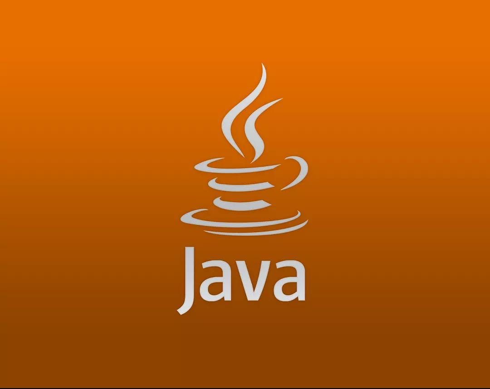

jave
Links:
jave:
Java is celebrating its 24th birthday this year and has been one of the most popular programming languages used for developing server-side applications. Java is a practical choice for developing Android apps as it can be used to create highly functional programs and platforms.
This object-oriented programming language does not require a specific hardware infrastructure, is easily manageable, and has a good level of security. Moreover, it is easier to learn Java in comparison to languages such as C and C++. No wonder, nearly 90 percent of Fortune 500 firms rely on Java for their desktop applications and backend development projects.
